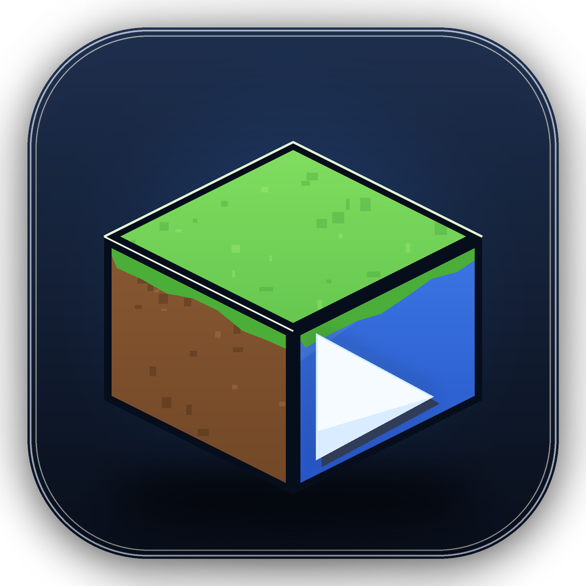

你好，Steve
准备好开始新的冒险了吗？
第一次使用请前往「下载」页安装一个正式版；启动前会校验并自动补齐缺失或损坏的核心文件。
建议分配 4–8 GB；分配过大反而可能拖慢启动速度。
本启动器目前使用离线账户。支持正版 Minecraft，请前往官网购买。
版本管理
已安装 0 个版本 · Fabric / Forge / NeoForge / Quilt 一键安装
存档管理
按实例浏览 saves/，备份到 backups/，支持 ZIP 导入、导出与删除前保护
世界名称、最后游玩时间、大小和游戏版本都会显示在这里。
世界存档 0 个
删除前默认先创建备份；恢复前会要求确认覆盖同名世界。
备份列表 0 个
备份保存在实例目录的 backups/
下载游戏
从 Mojang 官方源安装原版 Minecraft，支持镜像加速
模组与整合包
勾选即可启用/禁用模组；拖入 .mrpack 或 .zip 导入整合包，也能把当前实例导出分享
拖入整合包即可自动识别；导出会包含 mods、config、资源包、光影配置与 options.txt，不包含存档、日志和账户信息。
资源包、光影与数据包
按实例管理游戏内容；资源包和光影可以直接启用/停用，数据包按目录启停。也可以从 Modrinth 搜索下载。
联机与内网穿透
用你已有的 Terracotta、EasyTier 或 frp 配置一键启动联机工具。MinePilot 不捆绑第三方程序，也不绕过 Minecraft 账户认证。
支持占位符：{gameDir}、{player}、{address}。
这些工具各自采用独立许可证和隐私政策；请从官方仓库下载，并遵守对应服务条款。MinePilot 不提供房间服务器、不代管密钥，也不会绕过正版认证。
角色工坊
导入皮肤和披风用于启动器预览与头像；离线账户在游戏内不会自动显示，说明见右侧。
还没有本地皮肤
支持 64×64、64×32 与 128×128 PNG
皮肤库
0 个披风库
0 个运行监控
游戏启动后，实时查看 CPU、内存、运行时长与最新日志。
游戏还没有启动
从「启动」页进入游戏后，这里会显示实时资源占用与日志。启动器不会额外占用游戏进程资源。
崩溃诊断
用普通话解释游戏为什么退出，并把日志、系统信息和模组清单一键打包。
暂时没有崩溃记录
游戏异常退出后，MinePilot 会自动分析退出代码、启动日志和 crash-reports，并在这里给出可能原因与处理建议。正常退出和手动结束进程不会生成崩溃报告。
设置
修改会立即保存到本地配置文件
内存清理
把其他程序暂时不用的内存页移到页面文件，腾出物理内存给游戏。不会结束进程或删除数据；由启动器启动的游戏进程会被跳过。
深度清理会调用 Windows 系统级内存整理，需要管理员权限；可能出现短暂卡顿。
语言
游戏
已检测到的 Java
—启动时会优先使用“按版本指定”的 Java；没有指定时，自动选择满足要求的最低版本。手动移除只会从列表隐藏，不会删除磁盘文件。
按版本指定 Java
启动
账户
外观
下载
启动器更新
插件
plugin.json 中 permissions.network 声明的域名可以访问。插件拿不到账户令牌，也不能直接操作游戏文件。只安装你信任来源的插件。索引是可选的；留空不会联网。
模组来源
删除启动器
不再使用 MinePilot？强制关闭并删除启动器程序、快捷方式和卸载登记。
设置、账户、缓存和 Minecraft 游戏存档都会保留；删除后需要重新下载安装包才能再次启动。

MinePilot
一款轻量的 Minecraft Java 版启动器 · 第三方独立实现
关于本项目
MinePilot 是一个轻量的 Minecraft Java 版启动器，提供版本管理、原版下载、Fabric / Forge / NeoForge / Quilt 一键安装、启动前文件完整性校验与修复、模组依赖树检查、Microsoft 正版登录、版本隔离与日志查看。界面与交互参考了 Plain Craft Launcher (PCL) 的设计思路，但没有使用 PCL 的源代码，所有功能均为独立实现。PCL 采用自定义的《PCL 分发有限许可》，并非 OSI 开源项目；本项目未复制其代码或素材。
如果你喜欢 PCL，请支持原作者龙腾猫跃。
技术信息
启动器更新
更新源为本仓库 Releases，点击即可检查并下载最新安装包。
许可与声明
本项目以 MIT 许可证发布。Minecraft 是 Mojang Studios 的商标，本项目与 Mojang、Microsoft 及 PCL 作者均无隶属关系。启动器不会修改游戏文件，也不会绕过正版验证。
请支持正版 Minecraft。使用离线账户仅限个人测试与离线环境。